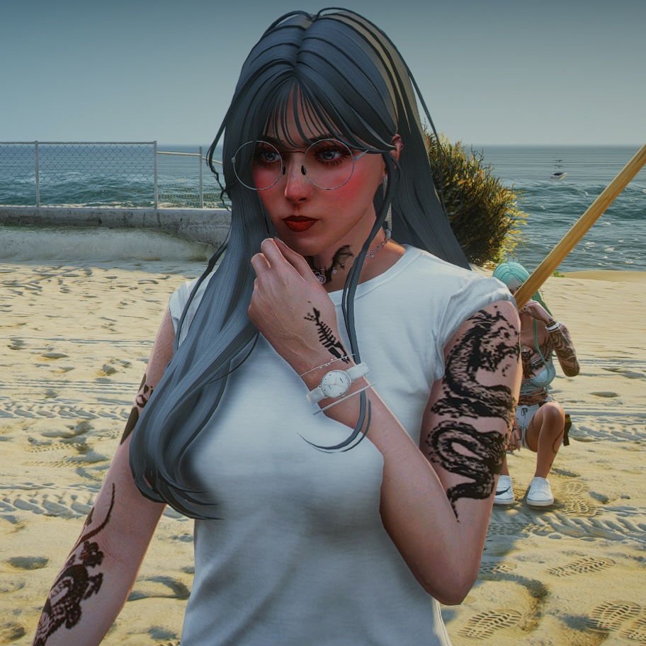

Gaming
Apart from reading books, I love playing games. But the game I played the most is the modified Grand Theft Auto V (GTA V). There is an application called FiveM that must be connected to GTA V in order to play it as role-play. I am a role-player GTA V for about 3 years this year. But do not worry, the game does not influence me in a bad way. Before I played this game, I used to have low self-confidence, introvert and I do not know how to communicate well with people. But after I enter the world of role-player, this game boost my confident level. I started to be more talkative person and communicate well with people.
This is Haweena, my role-play character in FiveM. As I mentioned, this is just a role-play. So, everyone can be everything. If we cannot do it in real life, we can do it in here. As a muslim, we cannot wears tattoo, so in this game, we are allowed to wears tattoo. But mind you, this is just game, and I never ever bring anything that I do in that game to real life. This game is just an escapism for me for a while, away from real life stress.